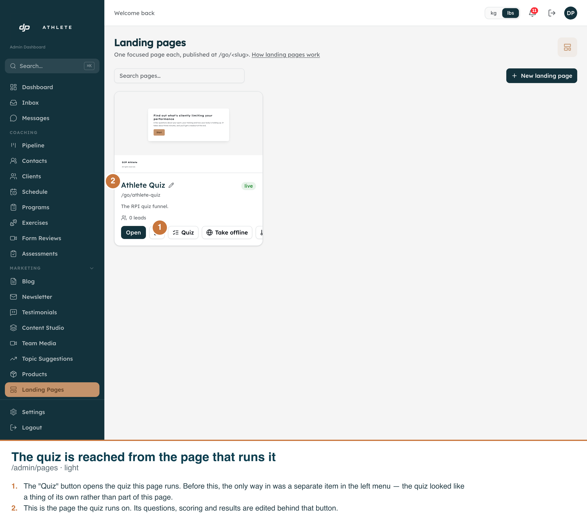
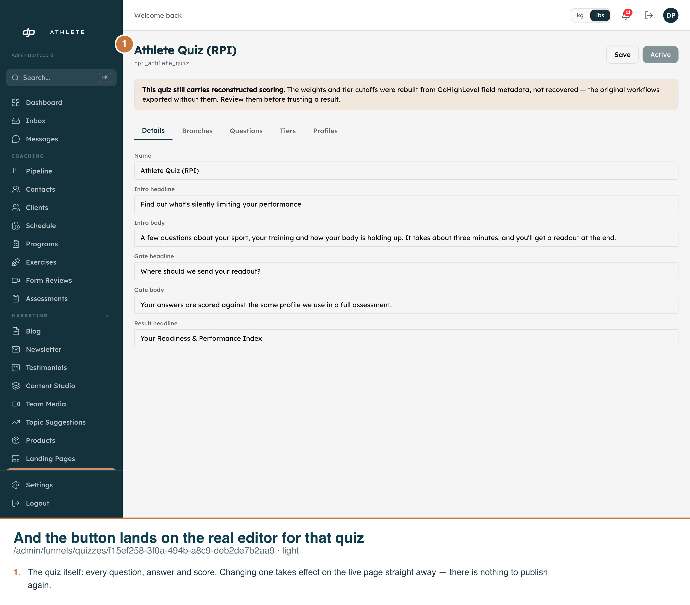
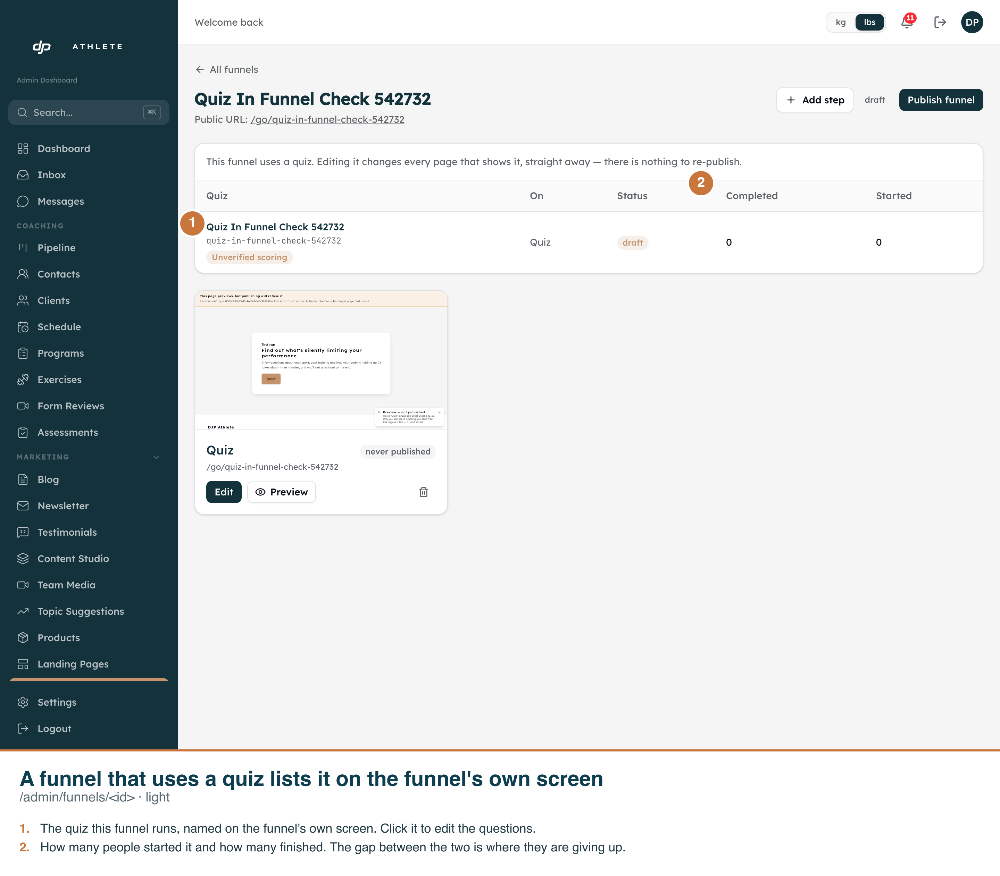
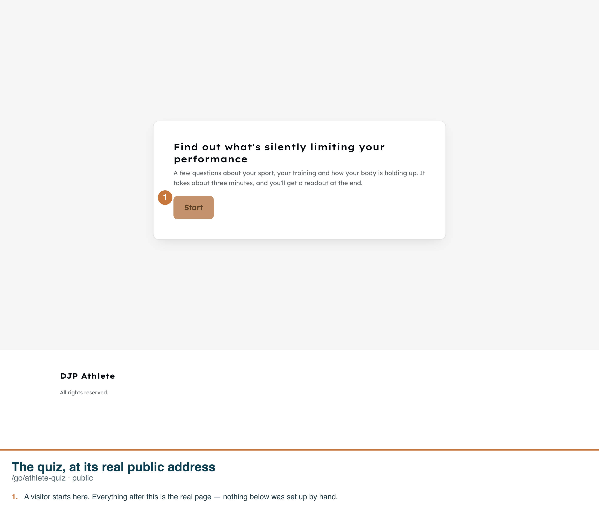
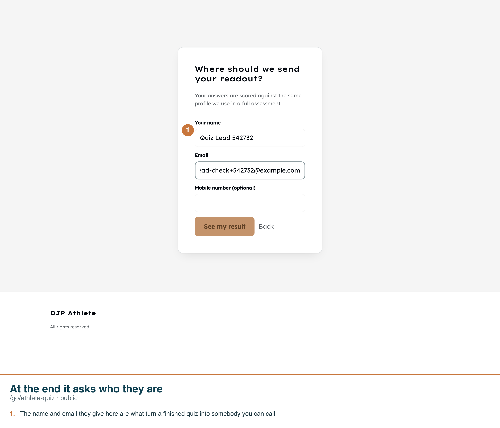
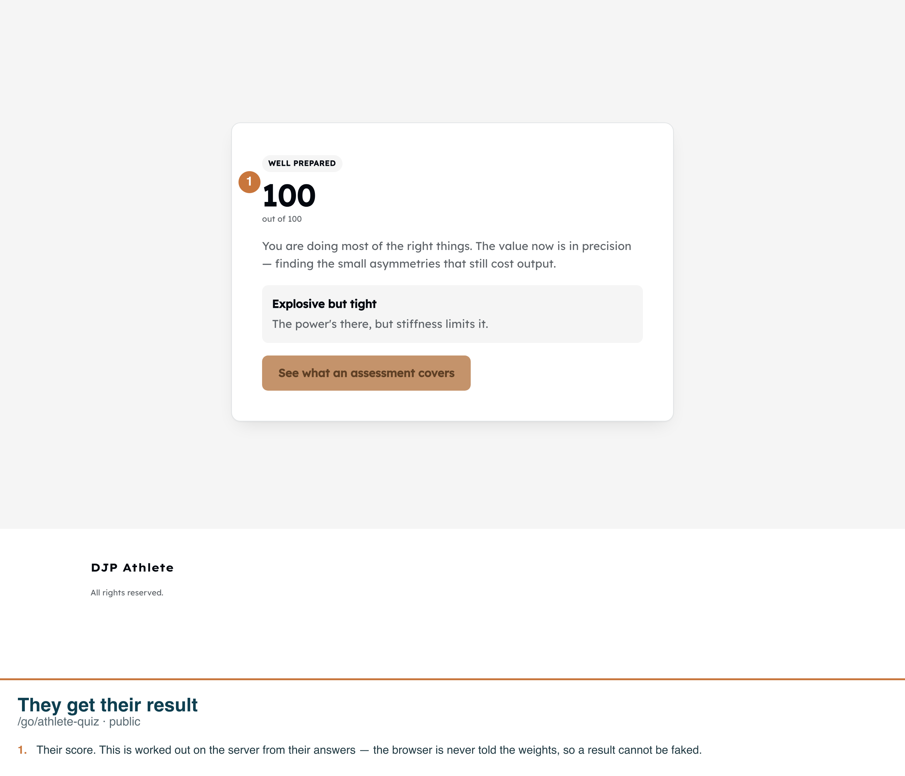
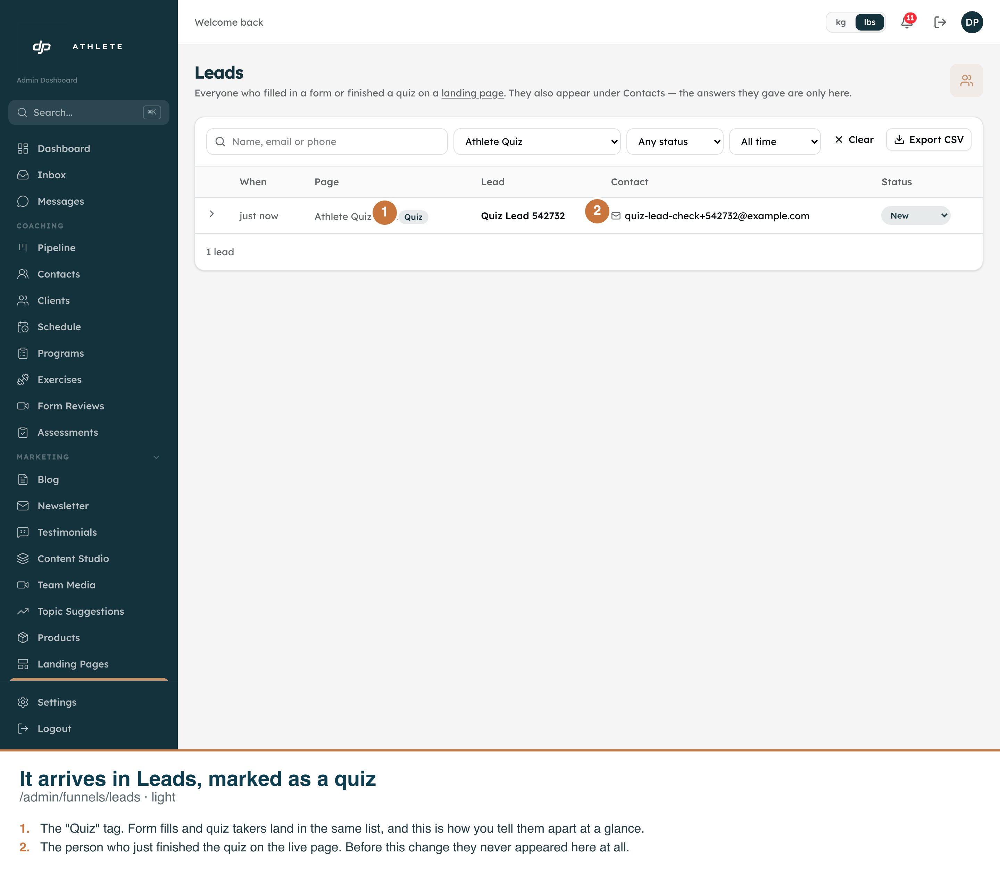
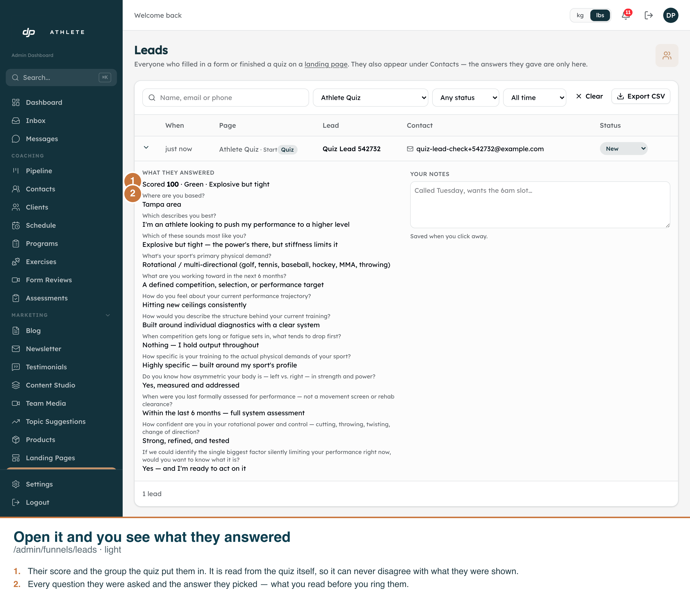
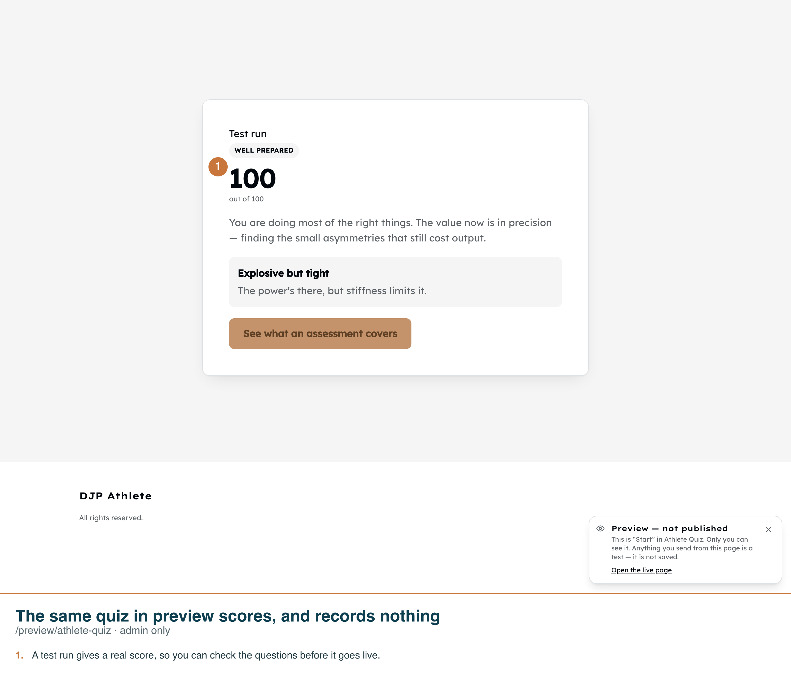

Every frame is the real app on its real route, driven by
scripts/capture-quiz-in-funnel.ts. The callouts are burned into each PNG.
Measured on the dev copy (anjvztjiokcgiyhobknq), not asserted in a mock:
ce79ad2a-6806-4a46-b7da-8d8d9bf1ed11 — kind = quiz,
on funnel 3109f9aa-c90f-4520-be29-e0953d4a9ce1, step 8d75b423-dfa5-4452-bf31-0ddd2733c3d1,
carrying 13 answers and pointing at attempt 85334c66-0134-450e-9613-d197d04eedd0.lead_user_id is null: the quiz feeds the contact spine, not a second identity./preview/athlete-quiz changed nothing —
submissions 1 → 1,
attempts 26 → 26.







